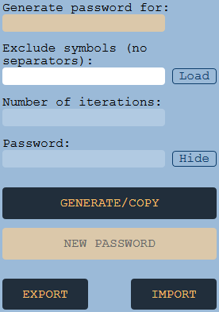

- Filled only once per browser (changing the browser or device => setup this data again or
import
it)
- The button on their right will show/hide the values
- You must remember these values forever since they are used to determine the passwords, hence
why these values are personal
- They are case sensitive!

Variables section:
- Filled once per website/product; Again, case sensitive and impacts the generated password
- In case the website does not allow certain symbols, you can put them in the "Exclude Symbols
field"
(load button will load existing exclusions for a product)
- Number of iterations will show how many passwords you generated so far for a certain product
(in
case
you are required to change it, you can ask for a new one)
- Generate/Copy will generate the password and automatically copy the password to clipboard
- New password will increase the iteration number and generate a complete NEW password for the
same
product
- Export/Import data allows you to export/import the existing values of constants and previous
generated
iterations for each product to use in a different browser/device
Constants section: